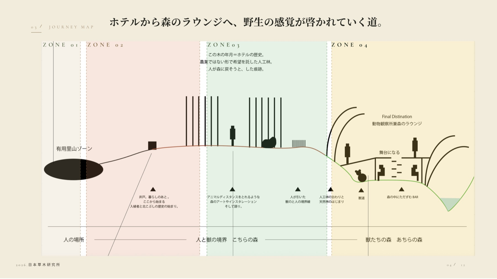
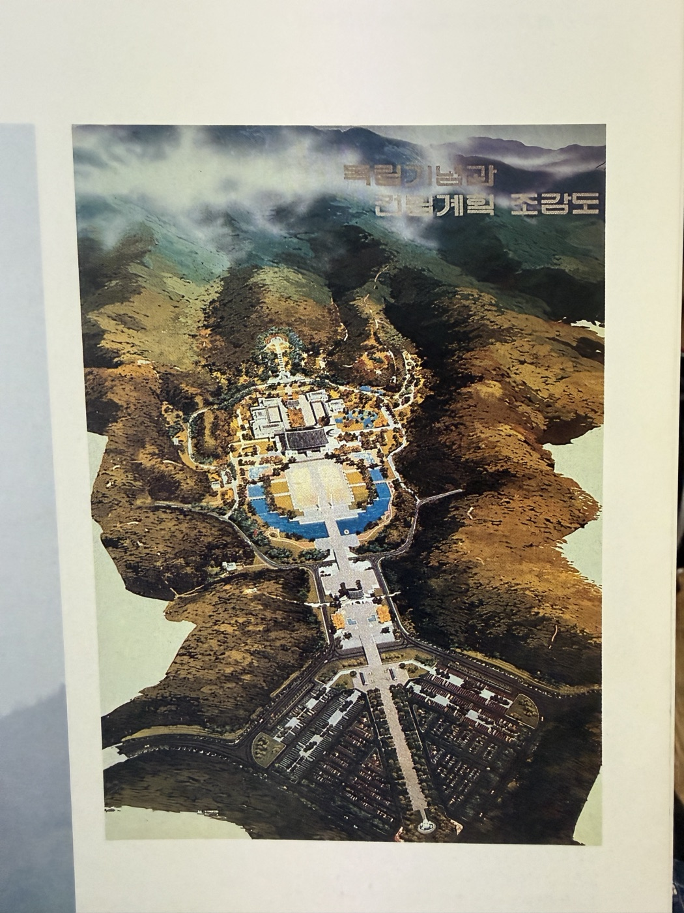
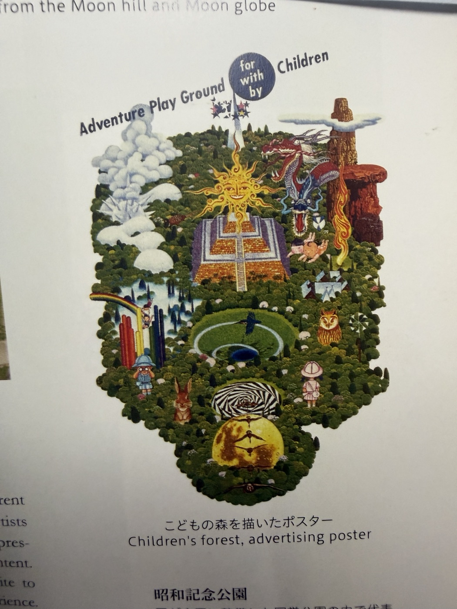
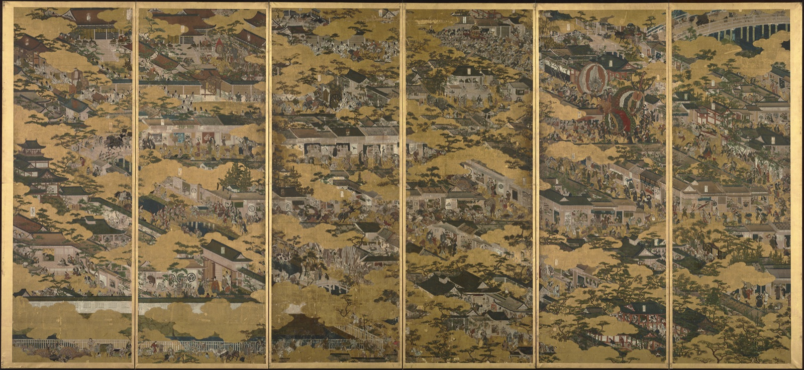
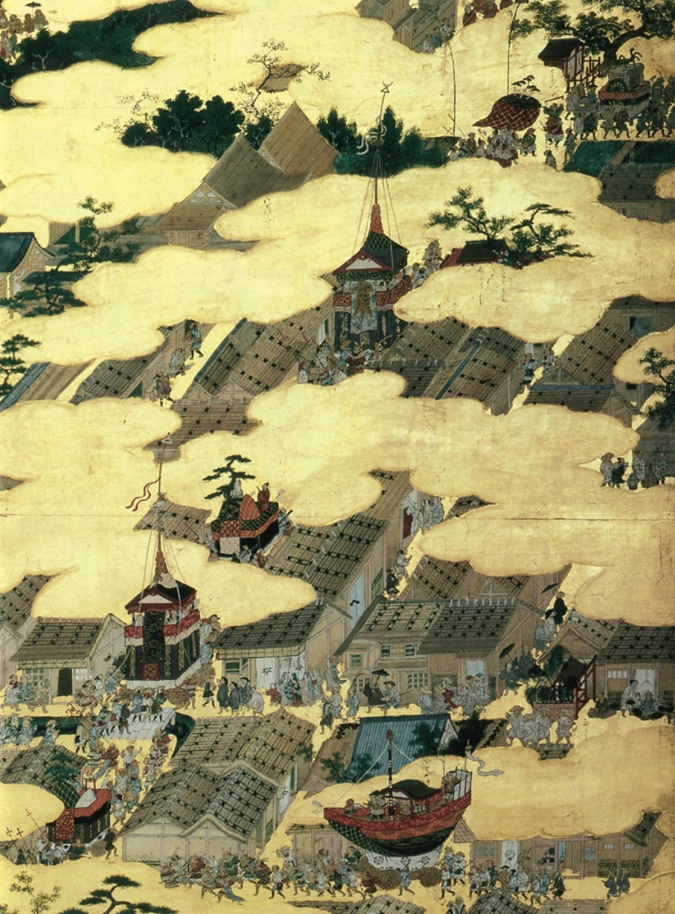
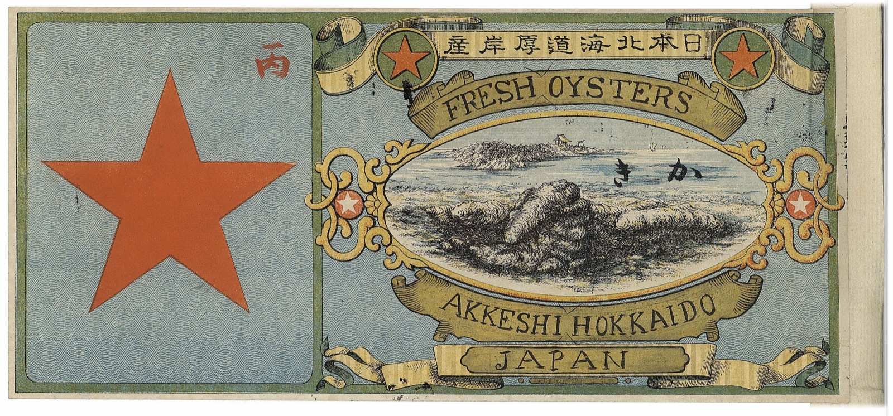
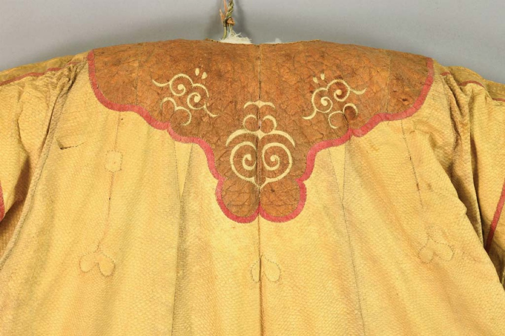
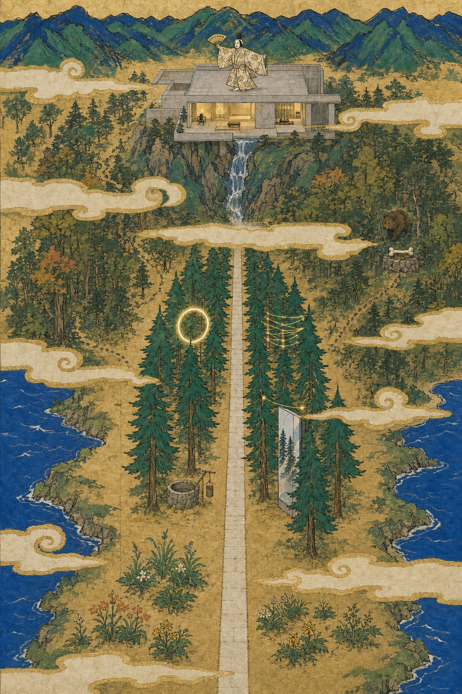
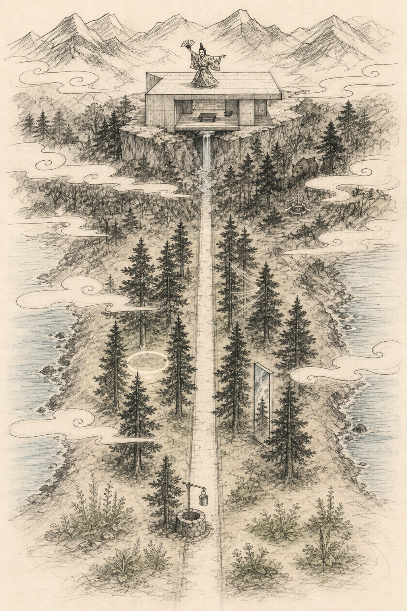

2026年8月＿日
イラスト制作のご依頼
知床北こぶしの森「野生の哲学の道」コンセプトグラフィック
ハラペコ遠藤さま
いつもお世話になっております。昨年の「食べられる庭」の一枚絵に続き、新しいプロジェクトの絵をご相談させてください。今回は北海道・知床です。
1. 依頼物
一枚絵。縦長のコンセプトグラフィック。
- 知床のリゾートホテルの裏手にある森（約8ha）を、里山から「森のラウンジ」まで歩く体験パークとして作り直すプロジェクトの全体像を、1枚で伝わる絵にしたいです
- 描画範囲はパークの中身のみです。ホテルと開発エリアは別のエリアで、その間に道もありません。ホテル・人里は描かないでください
- パース（完成予想図）ではありません。測量的な正確さや建築のリアリティは不要で、体験の世界観を伝えるコンセプトグラフィックです
- 提案資料の表紙・Webサイト・今後の対外発信のキービジュアルとして活用する予定です
2. 納品希望日
年 月 日 頃（ご相談）
まずは可能なスケジュール感をご教示いただけますと幸いです。
3. ビジュアルで表現したいこと
舞台は世界自然遺産・知床のウトロにある「北こぶし知床リゾート」。ホテルの裏手の森を、「野生の哲学の道」——里山に始まり、人工林・天然林を抜けて、渓谷の上の「森のラウンジ」へ至る一本の散歩道として再構築します。歩くほどに野生の感覚が啓かれていく、という体験の物語です。
絵として最も大事なのは、次の3つです。
- ① 森のイメージが伝わること（人の里山から獣の天然林へ、森が深くなっていくグラデーション）
- ② 最終目的地であるラウンジ（渓谷の上の小さな建物。絵のクライマックス）
- ③ そこまでの一貫した体験の流れ（一本の道でつながっていること）
全体として、フィールドのワクワク感と、野生を感じる怖さ（ヒグマの気配・深い森のおどろおどろしさ）が同居している絵にしたいです。
4. 描き込む要素 — 4つのゾーンとアクティビティ
道の順路どおり。細部の取捨選択はお任せします。別途お送りする提案資料に各ゾーンの写真・詳細があります。
| ゾーン | 場所 | 描きたいもの・起きること |
|---|---|---|
| ZONE 1 別れ | 有用里山 | シェフが山菜・野花を収穫する畑のような里山。人の気配の残る、旅のゼロ地点 |
| ZONE 2 出逢う | 森の入口 | 入植時代の井戸（覗き込むと当時の映像が流れる）と、熊よけの一斗缶（クマ柄。叩きながら森へ入る） |
| ZONE 3 啓く | 約150mの野生の道 | まっすぐな一本道。両側にトドマツ林が並び、木々の間に自然を感じるアート・インスタレーション（森のメディアアート）が立つ。この森の先が獣の森との境界 |
| ZONE 4 結ぶ | 天然林〜渓谷 | 深い天然林と獣道。最奥・渓谷の上にForest Heritage Lounge——打ちっぱなしコンクリートの端正な建物（動物観察所兼ラウンジ。香木バー・森のおたから展示室）。屋根が舞台になり、能などの芸能が演じられる |
| 全体に | ヒグマ（境界の向こうに。気配や対峙として）／知床連山／両側の海／雲・霞でゾーンが分節される。ホテルは描画範囲外 | |

5. 画角 — 半島を背負って立つ


俯瞰で、やや斜めの構図。手前のパークは大きく読めるように、背後の半島は圧縮して──という嘘のある構図を歓迎します。
6. トーン — この土地に堆積した4つの意匠を融合する
知床は、オホーツク文化 → アイヌ文化 → 本州からの入植、と何度も文化の境界が引かれてきた土地です。どれか一つの様式に寄せるのではなく、全てを融合したイメージで描いていただきたいです。
① 全体のトーン: 大和絵


② 開拓時代の雰囲気: 明治の北海道・缶詰ラベル


③ アイヌ文様: 雲の表現に

④ オホーツク文化: 熊と祭礼
このリゾートの足元からは、オホーツク文化（5〜10世紀の海獣狩猟民）の遺跡が出土しており、住居内からヒグマの骨塚＝クマ儀礼の痕跡が見つかっています。絵のどこかに、オホーツク文化を模した熊と祭礼のモチーフを描き込みたいです（この文化の絵は現存しないため、再構成になります。参考図版は別途お送りします）。
7. ラフ画（ご参考程度にご覧くださいませ）


8. 作成にあたってのお願い
- 提案資料一式（各ゾーンの写真・詳細）と、オホーツク文化・開拓期の参考図版集を別途お送りします
- 現地は知床のため、まずは資料とオンラインでの擦り合わせを想定しています（現地訪問の扱い・要記入）
- 着手前に一度、ラフの方向性についてお話しできますと幸いです
9. 予算
万円（要記入）
10. 納品形態
画像データでお願いいたします（印刷での使用も想定しているため、可能な範囲で高解像度ですと幸いです）。
以上となります、どうぞよろしくお願いいたします。
（署名）